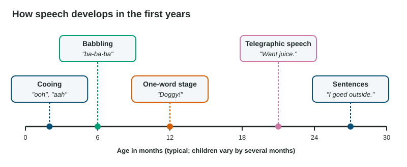

By age 5, most children have learned thousands of words and the rules for combining them, without a single grammar lesson. This topic covers what language is built from and how children acquire it. The exam asks you to name the unit of language or the stage of development a short example shows.
The building blocks of language
Language works in layers, from sounds up to sentences.
| Unit or rule | What it is | Example |
|---|---|---|
| Phoneme | the smallest distinct sound | "bat" and "pat" differ by one phoneme, /b/ versus /p/. English has about 40 phonemes. |
| Morpheme | the smallest unit that carries meaning | "unhappiness" is un + happy + ness: three morphemes. "Dogs" is dog + s (more than one). |
| Grammar | the system of rules for using a language | Includes semantics and syntax. |
| Semantics | the rules for deriving meaning | Adding "-ed" means the past; "cool" can mean cold or great. |
| Syntax | the rules for ordering words into sentences | "The dog bit the man" and "The man bit the dog" use the same words with different meanings. |
A key feature of language is generativity: with a limited set of words and rules, you can create and understand an unlimited number of sentences you have never heard. A 4-year-old who says "The zorp is snoozling on the blicket" is generating a new sentence from rules she knows.
Tuning in to the sounds of a language
Newborns can hear differences between speech sounds from many languages. Experience then narrows this. Werker and Tees (1984) tested babies from English-speaking homes on sound differences that Hindi and Nthlakampx use but English does not. Most 6- to 8-month-olds noticed them; by 10 to 12 months, few did. Babies learning those languages kept noticing them. By their first birthday, babies have tuned in to the phonemes of the language around them, a sign of a sensitive period for speech sounds. Adults can still learn new sounds, with more effort and practice.
From cooing to sentences

- Cooing (about 2 months): vowel-like sounds such as "ooh" and "aah."
- Babbling (about 6 months): repeated consonant-vowel syllables, "ba-ba-ba," "da-da-da." At first babies everywhere babble similar sounds; over the next months, babbling takes on the sounds and rhythm of the home language. Deaf babies exposed to sign language babble with their hands.
- One-word stage (about 12 months): single words, often standing for a whole idea. "Out!" can mean "I want to go outside."
- Telegraphic speech (about 18 to 24 months): two or more key words in the right order, with small words left out, like an old telegram: "Daddy go car," "Want juice." Even here, children follow the language's syntax.
- Sentences (from about 2 and a half): longer sentences with grammar, and fast vocabulary growth.
The order is very consistent; the timing is not. Healthy toddlers differ widely in how many words they use.
Worked example: how many words? Five 18-month-olds said 4, 7, 10, 10 and 19 different words during a 30-minute visit (invented data).
Mean:
What it shows: a range of 15 words in one visit is ordinary variation at this age. The mean describes the group; it is not a target each child should hit.
Smart mistakes: overgeneralization
Around ages 2 to 4, many children who once said "went" start saying "goed," and "mouses" for "mice." This is overgeneralization (also called overregularization): applying a grammar rule, such as "add -ed for the past," to words it does not fit. Adults never say "goed," so the child cannot be copying. The mistake is evidence that children work out rules from what they hear. In time, they learn the exceptions.